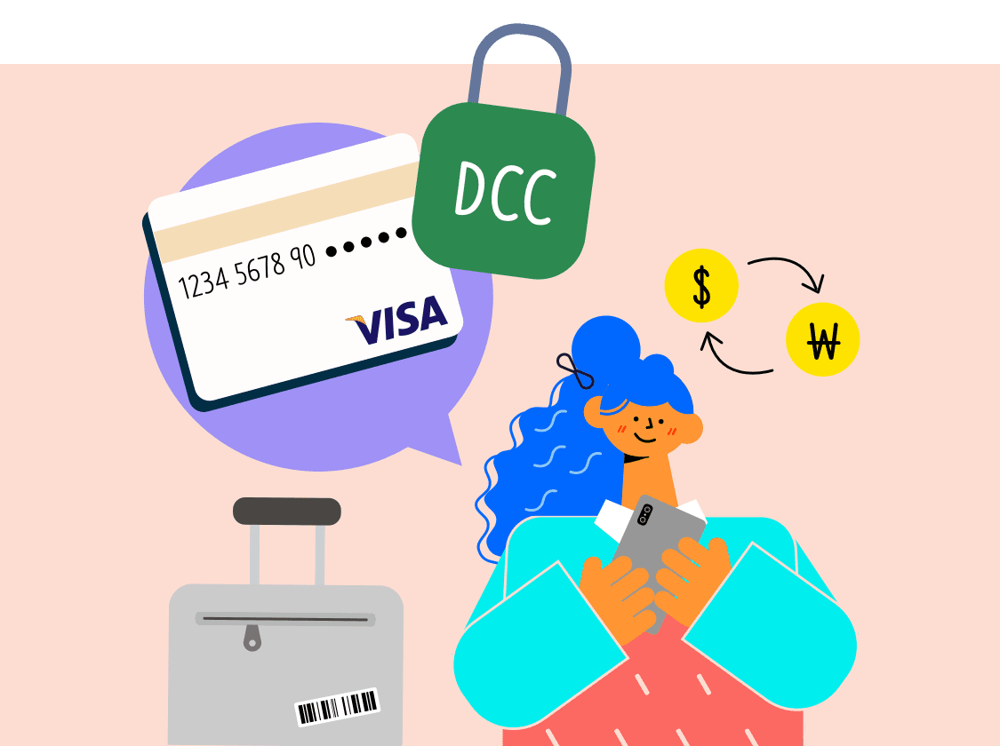

설레는 해외여행 준비,
마무리는 은행에서 완벽하게

환전은 어떻게 해야하는지, 카드는 무엇을 써야 하는지, 완벽한 해외여행 위해 무엇을 해야하는지, 지금부터 하나씩 살펴볼까요?
첫번째! 똑똑하게 환전하기!
요즘은 해외여행에서 결제할 때 편리성과 안전성 때문에 카드를 많이 사용해요. 하지만 해외여행 중 현금 쓸 일은 꼭 생기게 된답니다. 그래서 어느 정도의 현금은 반드시 환전해서 준비해야 해요.
이때 환전은 주거래 은행에서 하는 걸 추천해드려요. 주거래 은행을 이용하면 환율(Spread)우대서비스를 받을 수 있어서 보다 유리한 환율로 환전할 수 있어요.
또한 은행마다 이벤트로 우대 서비스를 제공하기도 하니, 꼭 비교해서 알아보세요.
특히 하나은행은 다른 은행보다 다양한 통화를 보유하고 있어서 환전이 편해요. 하나은행 환전지갑 서비스를 이용하면 높은 환율(Spread)우대율에 더불어 영업점별 통화 보유상황도 확인할 수 있어 보다 쉽고 간편하게 다양한 통화를 환전할 수 있어요.
두번째! 내 카드 꼼꼼히 체크하기
카드는 남은 외국동전 처리를 신경 쓸 필요도 없고 휴대도 간편하기 때문에 많은 분들이 해외여행 시 결제수단으로 이용하고 있어요.
이렇게 편리한 카드도 미리미리 체크하지 않으면 오히려 불편을 초래할 수도 있어요.
카드와 함께 떠나는 즐거운 여행을 위해, 은행에서 다음 사항들을 꼭 확인해주세요.
-
본인 명의의 카드를 사용해야 해요!
부모님께서 해외여행에서 쓰라고 카드를 주셨나요? 하지만 본인 명의 카드가 아니라면 사용이 제한될 수 있어요. 꼭 여권 이름과 같은 본인명의 카드를 발급받아서 챙겨가세요.
-
국내전용카드는 해외에서 사용할 수 없어요!
VISA, Master 등 해외에서 사용할 수 있는 카드인지 확인해야 해요. 특정 국가에서는 카드 브랜드별 추가 수수료가 발생하거나 사용이 제한되는 경우가 있으니 꼼꼼히 확인하세요.
-
IC칩 비밀번호(PIN 번호)를 등록해야 해요!
해외에서 결제할 때 PIN 번호를 요구할 수 있어요. 이때는 카드 비밀번호를 누르는 게 아니라, 별도의 IC칩 비밀번호(PIN 번호)를 눌러야 해요.
만약 4자리로 PIN 번호를 설정했는데, 6자리 번호를 요구한다면 설정된 비밀번호에 '00'을 붙이면 된답니다 -
원화결제(DCC) 차단 서비스를 신청하세요!
해외에서 원화로 결제하면 불필요한 수수료가 붙을 수 있어요. 해외여행 중 카드로 결제할 일이 생기면 꼭 현지화폐로 결제를 요청해주세요.
단, 키오스크를 사용하는 경우 등 어떤 때는 달러로 결제해도 자동으로 원화가 결제될 수 있어요. 그래서 원화결제(DCC) 차단 서비스를 꼭 신청하는 게 좋답니다.
- 해외거래 시 현지 통화가 아닌 원화(KRW)로 결제되어 추가 수수료가 발생하는 것을 방지하는 서비스
- 하나카드 이용 시 서비스 이용은 [하나카드 콜센터, 홈페이지/모바일앱 > 마이페이지/라이프이용안심서비스 > 해외원화결제(DCC)차단 서비스 설정]에서 신청